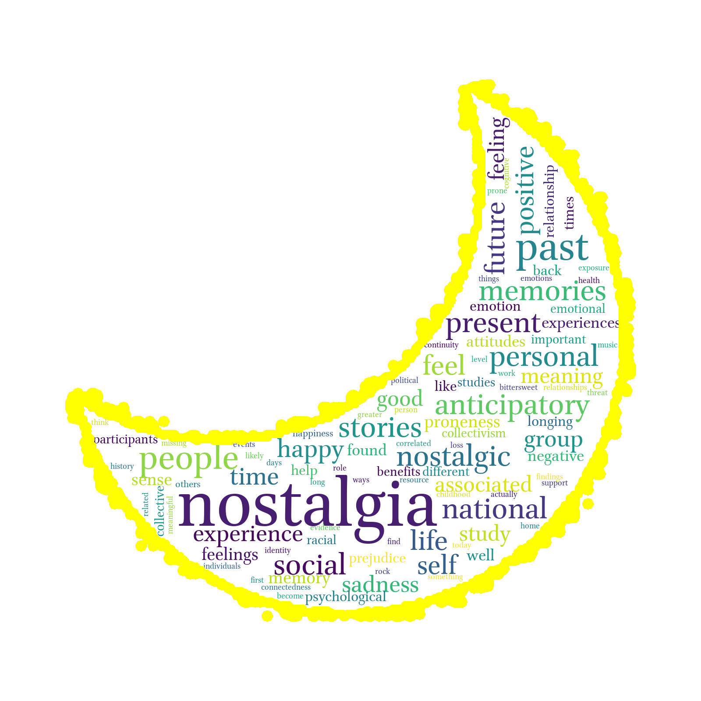
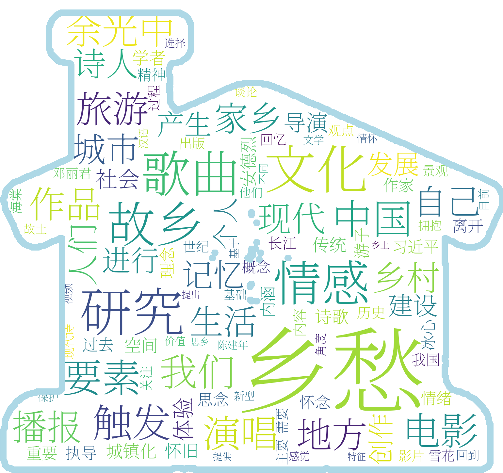
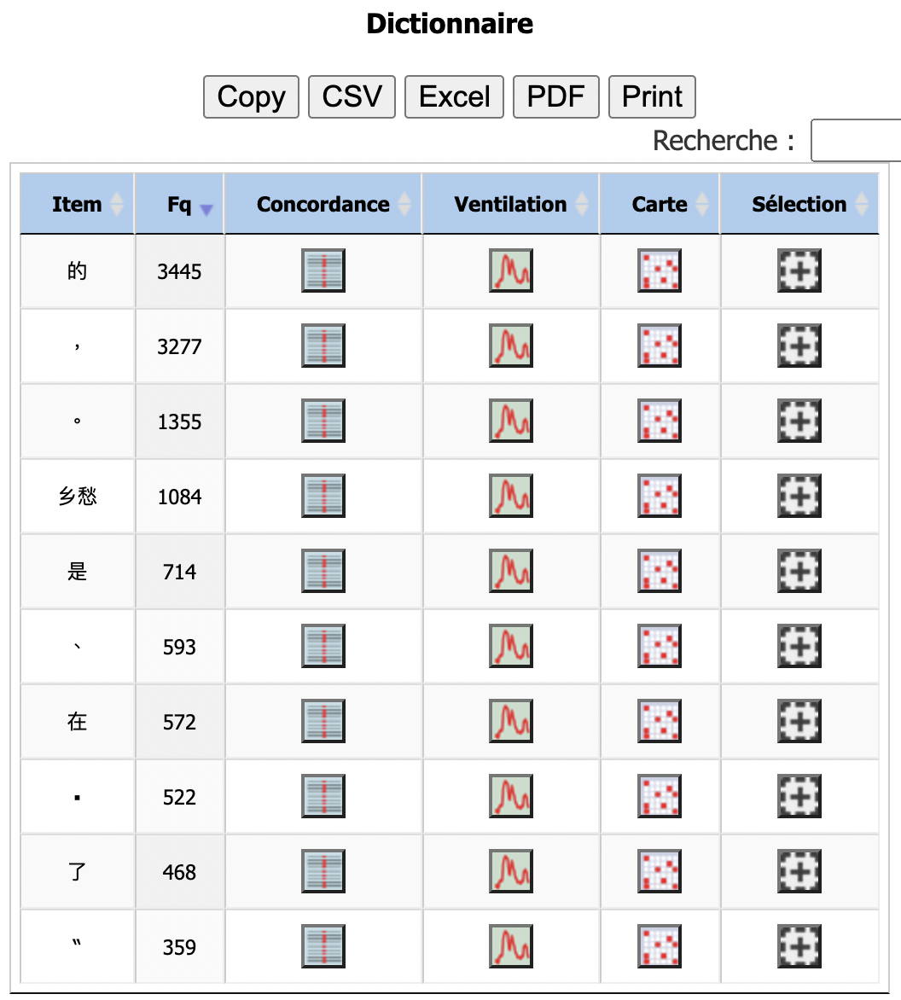
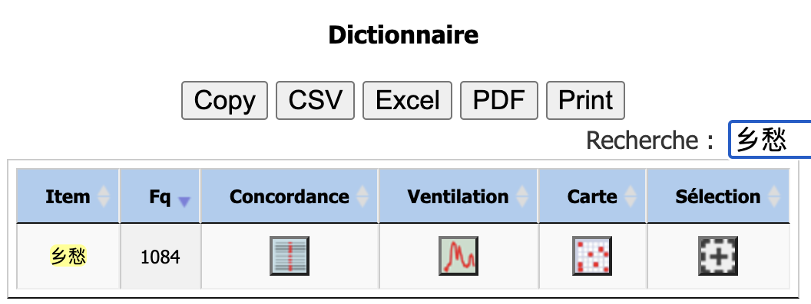
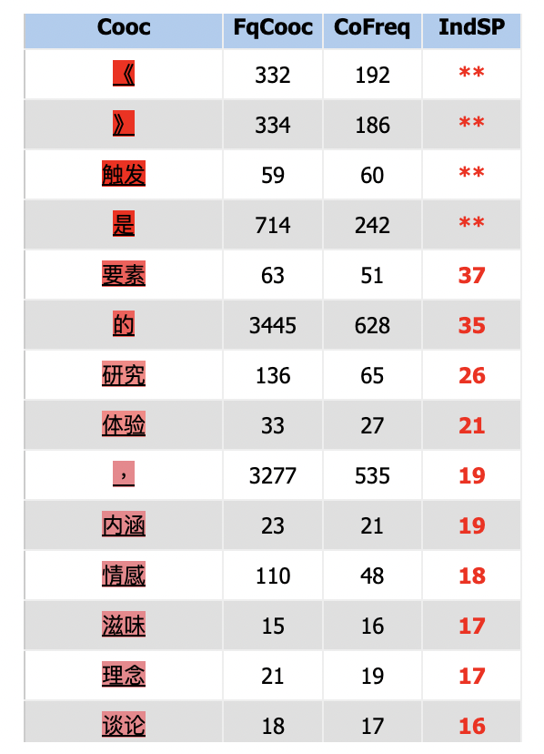
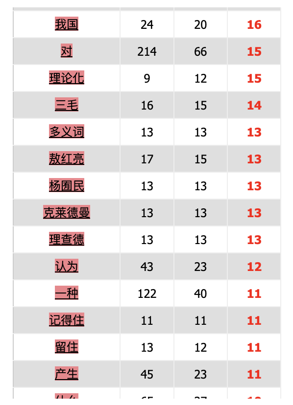

Choix du mot nostalgie
Le choix du mot nostalgie a été trouvé très rapidement au sein de notre groupe, étant deux personnes ayant comme langue maternelle le portugais (Anne-Sophie et Elodie), nous avons pensé au mot « saudade » en portugais qui est très connu et utilisé par les locuteurs du portugais et dont la traduction en français est ambiguë. L'une des traductions possibles du mot est "nostalgie", toutefois ce mot existe également en portugais mais ne signifie pas exactement la même chose. Il semble avoir une connotation de tristesse qu'on ne retrouve pas dans le mot "saudade". Nous avons donc choisi d'étudier cet angle en analysant en portugais les mots "nostalgia" et "saudade", puis de nous pencher vers la traduction anglaise "nostalgia", vers le français "nostalgie" et le mandarin 乡愁 xiāngchóu.
Mais tout d’abord définissons ce qu’est la nostalgie. Wikipédia définit la nostalgie comme : « La nostalgie est un sentiment de regret des temps passés ou de lieux disparus ou devenus lointains, auxquels on associe des sensations agréables, souvent a posteriori. Ce manque est souvent provoqué par la perte ou le rappel d'un de ces éléments passés, les deux éléments les plus fréquents étant l'éloignement spatial et le vieillissement qui représente un éloignement temporel. Enfin, ce sentiment peut renvoyer à un regret vis-à-vis d'un désir insatisfait. » Dans le monde lusophone le mot « saudade » a souvent été dit comme « unique », il n’y aurait pas vraiment de traduction possible pour définir ce qu’est la saudade, un sentiment bien connu des lusophones. Nous avons donc mis en lumière cette hypothèse et nous avons décidé de l'analyser à travers notre corpus.

Pour mieux comprendre le sens du mot nostalgie et la polysémie de ses traductions, nous nous sommes intéressées à ces concordances dans le corpus.
Le corpus:
Nous avons choisi une cinquantaine de liens par langues contenant le mot nostalgie et ses possibles traductions. Grâce au programme de base pour la création des tableaux, nous avons pu aspirer le contenu textuel de la page et créer un contexte pour chaque apparition du mot nostalgie.
Ce contexte est composé de la phrase précédant le mot cible ainsi que de la phrase qui le succède. A partir de ces informations, nous avons donc cherché quels étaient les mots qui apparaissaient le plus souvent à côté du mot nostalgie. Pour cela nous avons crée des nuages de mots pour chaque traduction du mot.
Nostalgia en portugais

On remarque dans les mots les plus fréquents "passado" "saudade" "vida", "marketing" "sentimento". Cela permet d'abord d'observer l'aspect psychologique du mot nostalgia qui réfère souvent à une forme de regret du passé et une réflexion sur la vie.
Il s’agit donc d’un sentiment lié au temps qui passe, une forme de mélancolie qui repose sur notre mémoire.
Le terme marketing est également intéressant car beaucoup de textes mentionnent l'usage en marketing du sentiment de nostalgie pour promouvoir des produits et booster les ventes. Enfin, on peut également voir le lien entre nostalgia et saudade qui sont donc synonymes et que comme nous le verrons avec le nuage de mot "saudade", n'ont pas exactement les mêmes connotations.
Saudade en portugais

Nous pouvons remarquer que le mot "saudade" renvoit aux termes "pessoa", "alguém", "sentimento"“amor”, "tristeza". On retrouve la notion de temps et de mémoire, toutefois le mot saudade semble être plus spécifique que nostalgia.
En effet, il semblerait que "saudade" fasse davantage référence au fait de ressentir un manque de quelqu'un. On peut également remarquer le terme “amor” qui signifie amour et peut se référer à l’affection familiale ou au sentiment amoureux. Il implique également une notion de tristesse et de distance, certainement dû à l’éloignement de ce qui est aimé.
Il s'agit donc du fait de se sentir seul, comme le montre le terme "solidão" et de regretter les temps passés avec cette personne.
Nostalgie en français

Pour le mot nostalgie en français, on retrouve les termes “sentiment”, “passé”, “mélancolie”, “vie” ce qui nous rappelle le mot “nostalgia” en portugais. On retrouve la notion de “regret” face au temps qui passe mais aussi un regret de l’”autre” ce qui peut nous rappeler le manque qu’implique le mot “saudade”. On peut également remarquer le mot “pays” qui fait penser au manque d’un pays, peut-être le pays natal qu’on a dû quitter.
Nostagia en anglais

Dans un premier temps, le nuage de mots autour du "nostalgia" en anglais nous révèle qu'il s'agit d'une notion étroitement liée au temps,
comme le démontrent les mots tels que "past", "present", "future" qui figurent dans les mots les plus fréquents et dont "past" (le passé) est considéré
comme le plus important et "future" (le futur) comme le moins.
Ensuite, comme le montre ses équivalents dans les langues latines ci-dessus, "nostalgia" représente globalement des sentiments complexes qu'on a éprouvés
lorsqu'on pense à sa propre vie et le temps passé. Concrètement, il renvoie à des réflexions sur la vie privée, des mémoires et des expériences personnelles
dans le passé ainsi qu'à la recherche de son sens (par exemple, "positive" ou "negative").
Enfin, en plus d'un sens individuel, ce mot a également une dimension interpersonnelle et collective, impliquée par les mots "social", "group", "national", "collective", etc.
乡愁 xiāngchóu en chinois

Au sens littéral, la traduction chinoise de "nostalgie" est composée de deux morphèmes: 乡 xiāng "ville natale"
et 愁 chóu "mélancolie". Ainsi, dans le nuage de mots, nous pouvons remarquer les termes tels que 故乡 gùxiāng "ville natale",
情感 qínggǎn "sentiment", 生活 shēnghuó "vie", 记忆 jìyì "mémoire", etc. qui renvoient à des connotations intrinsèques de ce terme.
Par contre, il est à noter que 乡愁 présente des propriétés plus ou moins spécifiques dans le contexte de la Chine,
étant donné que le terme apparaît très souvent comme un sujet de la création littéraire et artistique,
dont les termes concernés, comme 文化 wénhuà "culture", 作品 zuòpǐn "œuvre", 电影 diànyǐng "cinématographie", 诗人 shīrén "poète",
歌曲 gēqǔ "chanson", 余光中 yú guāngzhōng (un poète taïwanais), l'emportent en grande partie sur ceux relevant de ses sens classiques.
Enfin, 乡愁 a également une tonalité politique et sociale, vu qu'il y a de nombreux termes nous évoquant des images de la modernisation
urbaine et du développement économique de la Chine contemporaine (par exemple, 现代 xiàndài "contemporain", 中国 zhōngguó "Chine",
建设 jiànshè "édification", 城市 chéngshì "ville", 地方 dìfāng "(administration) locale", 城镇化 chéngzhènhuà "urbanisation", 发展 fāzhǎn "développement").
Nous allons d'abord analyser sur iTrameur le mot "saudade" en portugais afin de voir combien d'occurrences nous trouvons et dans quels contextes. Tout d'abord nous nous assurerons pour chaque dump ou contexte textuel que nous chargerons sur itrameur que ceux-ci respectent bien la trame et le cadre itrameur.
Nous constatons que le cadre est correct et qu'il respecte l'architecture iTrameur, nous pouvons donc faire notre analyse. Nous nous assurerons de la bonne forme de nos corpus pour chaque langue.
Nous voyons que les occurrences les plus présentes sont des prépositions, déterminants les plus utilisés dans la langue mais que le mot saudade apparaît avec 923 occurrences. Comme saudade peut être écrit avec des typographies différentes nous recherchons tout d'abord à l'aide du dictionnaire quelle typographie était la plus représentative puis nous analyserons à partir de celle-ci.

Nous constatons que la typographie du mot "saudade" en minuscules est la plus présente dans le texte (923 occurrences), nous utiliserons donc cette typographie pour faire nos analyses.
Nous pouvons voir que le mot saudade apparaît avec des verbes de sentiments comme "sentir", "carregar", "ser". On retrouve également beaucoup le mot "nostalgia" qui est un autre mot en portugais qui se rapproche de "saudade" pour cela nous allons analyser les contextes d'apparitions du mot nostalgia en portugais et comparer avec le mot "saudade".

Avec l'outil ventilation nous avons analysé la répartition du mot "saudade" au sein de notre corpus. Nous constatons que la fréquence d'apparition est la plus haute dans les parties 22 et 23.
En comparant l'analyse précédente avec le mot "nostalgia" en portugais, nous constatons que le mot "nostalgia" est beaucoup moins fréquent que le mot "saudade" en portugais, par conséquent nous pouvons déduire que ces deux mots ne sont pas vraiment utilisés comme des synonymes.
Analyse iTrameur pour le mot "Nostalgia" en portugais
Nous allons maintenant analyser le mot "nostalgia", qui s'emploie également en portugais. Nous voulons voir si ce mot est employé de la même façon que le mot "saudade" et s'ils peuvent être définis comme synonyme.
Pour cela nous avons cherché dans un premier temps les occurrences du mot "nostalgia" à l'aide du dictionnaire afin de voir quelle typographie est la plus utilisée et nous constatons qu'une fois encore le mot "nostalgia" écrit en miniscule est celui que l'on retrouve le plus avec 534 occurrences. Nous utiliserons donc cette typographie pour notre recherche.
Nous constatons que le mot "nostalgia" est associé à des mots comme "cérebro", "fisiológica", "visuais", "memória", des termes cognitifs et corporels. Nous pourrions donc supposer que "nostalgia" est plutôt employé pour décrire des sensations corporelles en comparaison avec le mot "saudade". Mais nous trouvons également les mots "solidāo", "social", "grupo", des termes qui font plutôt référence à un sentiment partagé par plusieurs individus.
Nous avons également remarqué une association que l'on ne retrouve pas vraiment avec le mot "saudade", c'est le mot "marketing". Nous pouvons voir qu'il est beaucoup employé avec le mot "nostalgia". Cela nous montre que la nostalgie est un sentiment utilisé dans une stratégie de marketing et de vente, sûrement car cela fait appel aux sentiments.
En utilisant la ventilation pour les mots "saudade" et "nostalgia" on constate que le mot saudade est beaucoup moins utilisé. Les courbes ne sont pas identiques et donc l'emploi du mot nostalgia est beaucoup plus utilisé. On peut donc en conclure que les deux mots ne sont pas vraiment synonymes et qu'ils sont employés dans des contextes différents et précis.
En analysant les cooccurrents on retrouve les mots "marketing"", "estratégia" et "sentimento", ce qui confirme notre hypothèse première que le mot "nostalgia" est utilisé en marketing pour jouer sur le côté affectif et sentimental.
A travers le noeud des cooccurrents on peut voir les mots avec les apparitions les plus fréquentes. En rouge foncé les coocurrences les plus présentes. On peut voir les mots "estratégia" et "perigosa" qui signifie "dangereux". Nous pouvons voir que les stratégies marketing sont donc perçues comme "dangereuses", car cela ferait appel à de la manipulation affective.
Analyse iTrameur pour le mot "Nostalgie" en français
Nous avons également choisi d'analyser le mot "nostalgie" en français. A l'aide du dictionnaire on peut voir que l'on retrouve 881 occurrences du mot "nostalgie".
En observant les contextes on remarque que le mot "nostalgie" est associé à "tristesse", "souvenirs", "sentiment", "passé", "douleur", "triste". On retrouve donc le champ sémantique des sentiments, mais avec "douleur et "triste" on peut voir ce sentiment comme un ressenti assez lourd et négatif.
En observant les cooccurrents du mot "nostalgie" on retrouve en première position la plus fréquente le mot "mélancolie", qui est défini comme : " Un état de tristesse vague accompagné de rêverie". Nous pouvons donc voir qu'en français le mot "nostalgie" a une connotation plutôt négative. On retrouve également le champ sémantique des animaux et des sentiments mais également le domaine de la photographie.

A travers le noeud des coocurrents et après avoir réduit l'indice de spécificité à 10 on retrouve les mots d'apparition les plus fréquents. On aperçoit le mot "ariaga" qui fait référence à une sorte de chocolat et nous connaissons tous les capacités du chocolat à nous remonter le moral et lutter contre la "nostalgie". Là encore cela nous confirme bien que la nostalgie en français est perçue comme un sentiment lourd à porter.
Analyse iTrameur pour le mot "Nostalgia" en anglais
Nous analyserons maintenant le mot "nostalgia" en anglais qui s'écrit comme "nostalgia" en portugais, nous voulons donc voir s'il se confondent parfois et quels sont leurs différences. Comme précédemment nous retiendrons la typographie la plus présente avec 1034 occurrences du mot "nostalgia".
En observant les contextes du mot "nostalgia" en anglais nous pouvons retrouver les mots "psychologist", "psyche", "psychological", "functions", "emotional", nous constatons donc qu'en anglais le mot nostalgie est employé avec le champs sémantique psychologique et émotionnel.
En observant d'autres contextes on peut également voir qu'en anglais "nostalgia" est utilisé avec "political", "leaders", "people", nous pouvons donc supposer que le mot "nostalgia" est utilisé dans une démarche politique sur la population. Mais on retrouve également les mots "historical" and "personal" qui reviennent à plusieurs reprises. Cela nous montre que la nostalgie est un sentiment qui peut être personnel et commun à tous dans le sens où nous avons tous déjà connu ce sentiment de nostalgie, à travers l'histoire collective ou personnelle et c'est à ce niveau que l'influence politique agit.
A travers les cooccurrents on peut voir que le mot "anticipatory" ainsi que "personal" et "proneness" (prédisposition) sont les mots d'apparition les plus fréquents avec le mot "nostalgia" en anglais.
Pour cela nous nous sommes donc intéressées à regarder de plus près les contextes d'apparitions du mot "anticipatory" et nous pouvons constater qu'il est associé quasiment tout le temps à "nostalgia" mais également à "personal". La nostalgie serait donc un sentiment que l'on anticipe et qui joue sur le côté psychologique des individus.
A l'aide la ventilation nous pouvons voir que le mot "anticipatory" est spécifiquement présent dans les parties 12 et 13, il est plus présent que le mot "nostalgia"". En comparant avec le total du corpus nous pouvons donc nous douter que le mot "anticipatory" n'est pas le mot le plus utilisé vraiment avec le mot nostalgia mais qu'il a sûrement fait l'objet d'un article où le sujet a été abordé et développé dans notre corpus, voilà pourquoi nous le retrouvons à une fréquence plus élevée que les autres mots. Nous pouvons voir que dans certaines parties ces mots sont sous spécifiés (en dessous de 0).
Nous avons également regardé avec le noeud de cooccurrents les mots les plus fréquents, et on retrouve ceux cités plus hait ainsi que "reflective", "compared", "trigger", "restorative". Nous pouvons donc voir que le mot nostalgia en anglais est très associé à des termes de cognitions et de reflexions.
Nous avons également voulu voir à l'aide de la ventilation la répartition des mots "homesickness", "nostalgia" et "Nostalgia". Nous constatons que le mot le plus fréquent est "nostalgia" en minuscules. Dans certaines parties du corpus la typographie du mot "nostalgia" se confond avec "Nostalgia" mais la plupart du temps le mot "nostalgia" en minuscules est bien plus présent. Nous constatons que "homesickness" est présent également dans le corpus mais en petit nombre.
Analyse iTrameur pour le mot 乡愁 xiāngchóu en chinois
La dernière partie de notre analyse porte sur 乡愁 xiāngchóu, le mot chinois équivalent de "nostalgie".
Dans un premier temps, nous expliquons la raison pour laquelle nous choisissons 乡愁 comme le mot équivalent
des termes "nostalgia/nostalgie" dans les langues romanes de notre projet, plutôt que d'autres synonymes comme
思乡 sīxiāng "avoir le mal du pays" ou 怀旧 huáijiù "se souvenir du temps passé". Sur la page
Wiktionary dédiée à "nostalgia", nous remarquons que
les termes "nostalgia/nostalgie" sont dérivés d'un mot grec, où les racines "nóstos" et "álgos" signifient
respectivement “returning home” (retour chez soi) et “pain” (douleur). Comme nous l'indiquons dans la page
Nuages de mots, 乡愁 renvoie littéralement à un sentiment mélancolique par rapport à son ville natale, ce que nous considérons comme
pertinent en tant que mot équivalent à "nostalgia/nostalgie".





Script de base pour la création des tableaux

Cliquez pour télécharger le script base tableaux
Le script ci-dessus permet de récupérer le code de réponse du serveur ainsi que l'encodage de chaque lien. Ainsi les lignes des tableaux représentent chacune un lien.
Le programme va ensuite créer un tableau html où il placera ces informations ainsi que des liens vers les aspirations des pages et le contenu textuel des pages (dumps).
Pour comprendre le script étape par étape, merci de consulter les commentaires inscrits dans le script.
Script de base pour la création du concordancier
Cliquez pour télécharger le script du concordancier
Le programme ci-dessus vérifie d'abord si l'utilisateur a bien donné deux arguments, c'est-à-dire le fichier texte et le mot cible nommé motif.
Ensuite le programme va construire un tableau avec le mot cible, les cinq mots à gauche (contexte gauche) et les cinq mots à droite (contexte droit).
Script de base pour iTrameur

Cliquez pour télécharger le script de iTrameur
Le programme ci-dessus se lance sur les contextes ou dumps d'une langue et remplace les éléments pour créer un seul fichier avec des balises qui pourront servir de marqueurs de contexte sur itrameur.

A la suite de notre travail de groupe et de nos différentes recherches et résultats, nous pouvons conclure que le mot "nostalgia" en portugais est plus proche du mot "nostalgie" en français dans le sens où tous les deux démontrent une forme de regret du passé. Il s'agit d'un mot assez théorique lié à la mélancolie, d'ailleurs en français nous retrouvons le terme mélancolie associé au mot "nostalgie". Nous nous sommes aperçu que la nostalgie est un sentiment utilisé dans le domaine du marketing et en politique afin de jouer et d'éveiller notre désir de retrouver ce quelque chose dont on ressent le manque. "Saudade" est un mot plus spécifique et concret. On parle surtout du manque de quelqu'un quand on utilise "saudade". Il s'agit d'un sentiment physique lié à l'affection et l'éloignement d'une chose ou d'une personne. Nous pouvons donc dire que les termes "saudade" et "nostalgia" ne sont pas vraiment synonymes. Ils sont utilisés à des fins différentes et on ne les retrouve pas dans les mêmes contextes d'apparition. Le mot "saudade" en portugais serait plutôt un mot qui préciserait une certaine forme de "nostalgia", une "nostalgia" particulière et qui est vraiment lié à la chair au manque presque vital. Nous pouvons donc voir la "saudade", comme une branche dans l'arbre de la nostalgie.
Anne-Sophie Foussat

- Issue d'une licence en Langues Etrangère Appliquée anglais portugais à Sorbonne Université, je me suis ensuite dirigée vers le master TAL à Sorbonne Nouvelle.
- Langues parlées : français, portugais, anglais et espagnol
Elodie Esteves
- A la suite d'une licence en Sciences du langage à la Sorbonne Nouvelle Paris 3 mineure humanités numérique, j'ai choisi de m'orienter vers un master TAL.
- Langues parlées : français, portugais, espagnol et anglais
Ji An
- Après des études en Master Sciences du langage à l'Inalco, je prépare actuellement mon mémoire portant sur les dialectes yue, une langue sinitique parlée dans la Chine méridionale. En même temps, je continue mes études en M1 TAL à Paris Nanterre.
- Langues parlées : chinois yue, chinois mandarin, français, anglais